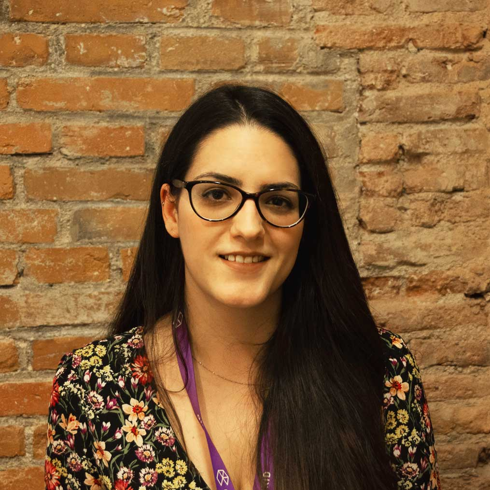

TEAM
We are a female team reinventing ourselves with a highly entrepreneurial spirit. Each of us contributes to the team with the best of her skills. Together we are: talented, tenacious, determined, creative and enthusiastic.
Nowadays around the world, many people consider a disadvantage the fact of being a woman. However, we are fighting to make a difference and change the rules of the game, to prove that being a woman is not a weakness but a great strength.
Strengths
We listen to each other carefully and make the decisions together, so that everyone agrees with the goals and methods we’re using. We also take into account the differing opinions that might arise from the decision-making process.
We adapt quickly to unforeseen circumstances.
We learn from our mistakes, constantly improving our performance as a team.
We like seeking out feedback to improve our work and support each other in every failure and success.
We are enterprising women, capable of reaching our objectives and identifying opportunities, new projects and organizations to reach our objectives.
Weaknesses
Our team is just starting to make its first steps in web development. That may make us vulnerable in some way, nevertheless it’s also keeping us eager to learn more about the mysteries of code. Everyday we discover something new about this whole new world of programming, about each member of the group and about ourselves too. We are different, with different life experiences and mind-setting but we have one thing in common — we all are perfectionists with high standards. It's our strength and weakness at the same time. Our perfectionism makes us too self-critical but in the other side it makes us reach the best result possible
ABOUT US
-

Paloma Ania
I have formal education as a Laboratory Technician and a Violinist, so I come from two different worlds in order to become a great Front-end Programmer. At the beginning videogames awakened my interest in programming, and then this curiosity increased with the development of society in terms of technology usage at almost every context around us. Now I consider it is a good time to learn some great programming skills, by focusing on my first chance to become a Front-end Programmer, willing to learn more about this fascinating world and its fields such as game development.
-

María Badanina
I have a bachelor's degree in graphic design and I love front-end because it’s all about creativity and creative problem-solving. I'm fascinated by idea that as a front-end developer I can build a useful, high quality product from scratch and this product is going to interact with users and simplify their daily lives. I’m crazy about animations, transitions, microinteractions and all other types of visual effects in interfaces.
-

Laura Ferrando
I’m a psychologist currently living in Madrid. After finishing my bachelor studies, I realized Psychology was not what I’m really passionate about. I think web programming is a perfect match for both my skills and personality: I am organized, hard-working, creative; I like team-working, helping people and constantly learning new things. And most of all, I am ready to become a role-model for other women to dare enter the Tech world!
-

Stephanie Guevara
I’m an architect from Venezuela currently living in Madrid. Responsible and dynamic, ready to work under pressure in teams and individually. Constant motivation and initiative to develop myself in any area assigned to my position quickly and professionally ethic. Looking for new opportunities to keep growing in a professional level, passionate about technology and the digital world, future front-end developer.
-

Elisa Martín
I’m an engineer passionate about new technologies and their constant change. Currently I am reinventing myself as a front-end developer to make a living from my passions. I keep on working and encouraging myself to learn new stuff everyday by getting out of my comfort zone.